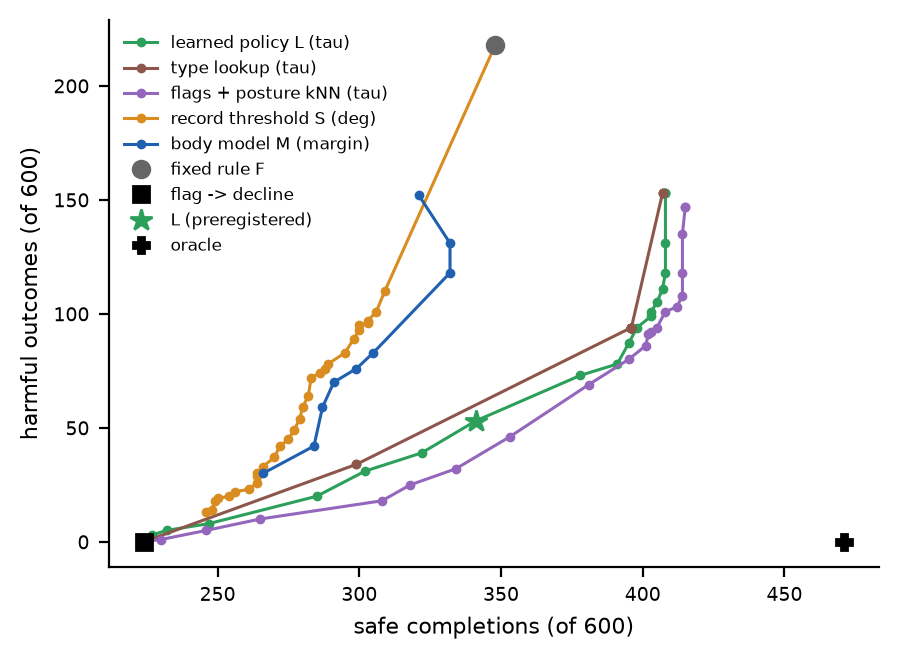

2026 · simulation study
Gentle by Knowing: How Much Must a Care Robot Know About a Person to Lift Their Arm Safely?
In simulation, a care robot lifting a stiff arm was gentle not because it felt the force, but because it knew beforehand which joint was restricted — and when not to lift.
Mu-Hua (Maurice) Wang · National Yang Ming Chiao Tung University
Submitted to Frontiers in Robotics and AI as a Brief Research Report, 2026. Simulation study.
Same simulated person, two robots: a fixed lift that knows nothing about the person (left), and a policy learned offline in simulation that reads the care record before touching the arm (right).
The question
Robots that move a person's limb are protected today mainly by limits on contact force. But many care recipients have contractures, and lifting a forearm can press a restricted shoulder or elbow into the end of its range. We asked how much a robot must know about the specific person to avoid that, and whether force sensing can replace that knowledge. In a musculoskeletal simulation (MuJoCo/MyoSuite) of a robot supporting the forearm from below, we compared controllers that differ only in what they know about the person.

No single lift is safe for everyone. Proximal support elevates mainly the shoulder, distal support also flexes the elbow; for a person with a restricted joint, the wrong site presses it into the end of its range.
What we found
- Force sensing came too late. No force-threshold guard reduced harmful outcomes by significantly more than 5 percentage points. Its best setting cut harm by 4–7 points at the cost of 40–51 % of safe completions, because 95–100 % of harmful outcomes began during the first attempt.
- Knowing the person, and being willing to decline, helped most. A policy learned offline in simulation, reading a care record with 20° error, reduced harmful outcomes from 110 to 25 of 300 new simulated persons at a similar number of safe completions (174 vs. 177). It did so largely by declining: it declined 30 % of persons.
- Which joint, not how many degrees (post hoc). With 20° record error, a policy that knew only which joint was restricted, plus the settled posture, performed as well (353 safe and 46 harmful of 600, vs. 341 and 53).
- The record's gaps stay unprotected. With half of the restrictions missing from the record, the policy still harmed fewer persons than the fixed lift (64 vs. 108), but that is 59 % of the fixed lift's harm rather than about a quarter.
What "harm" means here. The load the robot presses into the shoulder-elevation and elbow-flexion joint limits; an outcome is harmful at ≥ 0.5 N·m. It is a mechanical exposure proxy, not pain or injury.
Videos
Where the robot holds the arm decides which joint moves: proximal support lifts mainly at the shoulder, distal support also bends the elbow.
A force guard trips just after the joint is already overloaded: in this typical simulated case the elbow load passes 0.5 N·m at 0.59 s, and even the tightest guard would trip only at 0.64 s. The loaded joint is not the one the wrist sensor sees.
Declining is a decision, not a failure: when no lift is predicted to be safe, the learned policy hands the task back to a human carer.
The information ladder

Harmful outcomes against safe completions at each level of knowledge, 300 new simulated persons. Lower right is better; the dashed arrow is the remaining gap to perfect knowledge.
Declining everyone with a complete limitation flag removed all harm but also 37 % of safe completions; the learned policy harmed fewer persons than a population body model given the same record (harmful-outcome rate −0.14 [−0.19, −0.09]). Perfect knowledge, a ceiling rather than an achievable controller, reaches 237 safe and 0 harmful: of the 63 safe completions the policy missed, 47 were unnecessary refusals, and 18 of its 25 harmful outcomes were persons with no safe lift at all.
Force sensing comes too late

Tightening the guard barely changes harm (left) but removes safe completions (right). Hard limit and graded end-feel of 12, 20 and 25°, 120 new persons. Dotted: the fixed rule without a guard.
With a hard limit, tightening the guard cut safe completions from 69 to 40 of 120 persons at an unchanged harm rate. With 12° end-feel the wrist force tracked joint load (median Spearman 0.75), yet the guard still acted after the joint had been loaded. Force limits still protect skin and soft tissue; they are not sufficient for joints.
Robustness

Learned policy minus fixed rule (grey) or body model (blue), paired 95 % CIs, in every preregistered confirmation condition, without retraining (the no-posture row is a separately specified variant). "Posture estimate" means Gaussian noise with SD 5°.
The reduction replicated on new persons (−0.27 [−0.32, −0.21] against the fixed rule) and held under noisy or absent posture, a more impaired population, graded end-feel and two physics perturbations. With stale records (restricted ranges over-estimated by 10°) its harm rose from 53 to 68 of 600 persons, against 118 to 210 for the body model. With half the restrictions unrecorded, it harmed 64 persons against the fixed rule's 108, and a simple decline-if-flagged rule harmed fewer still (50 vs. 64) at 29 fewer safe completions.
What the robot needs to know

Post hoc trade-off on 600 confirmation persons, sweeping each rule's decline parameter. Lower right is better.
This analysis is post hoc. A policy given only the two restriction flags and the settled posture (no recorded degrees) reached 353 safe and 46 harmful, against the learned policy's 341 and 53. Both learned policies lie below the record-threshold and body-model curves: what mattered was knowing which joint is restricted, and when to decline.
Limits
- Simulation only. No robot or human data. One task (a 5 cm forearm lift), one end effector, a passive simulated person who neither resists nor winces.
- Harm is a mechanical exposure proxy (peak torque pressed into the joint limit), without a pain or injury dose–response. Restricted ranges were designed to interact with the task, so only differences between controllers are interpreted, not absolute rates.
- The physics perturbations kept the joint geometry. Reflex gain ×3 and wider body variation changed muscle dynamics, not body structure; the fixed rule's harm rate barely moved (36 % and 40 %).
- Unrecorded restrictions are unprotected. Persons whose restriction was missing from the record were harmed at exactly the fixed-lift rate (50 vs. 50 of 85).
- Declining is not free. It hands the task to a human carer. Only a force-based reactive controller was compared; a kinematic guard was not tested.
- The protocol was dated and kept locally, not registered with an external registry. Earlier confirmation persons were reused for training, and the analyses of what the robot needs to know are post hoc.
How it was checked
- Rounds with hypotheses written first. Before each round's data were generated, the hypotheses, controllers, thresholds, sample size and analysis were written into a dated protocol, and tested on simulated persons never used before.
- Every hypothesis is reported, including the failures (Supplementary Table S1). Identifying the individual body by gentle probing was supported at first, did not replicate, and later added harm. Routing the lift without declining did not reduce harm. The learned policy's safe completions were not shown non-inferior to the fixed rule's.
- The baseline is not a straw man. The best of all 48 fixed strategies, chosen with hindsight, harmed 203 of 600 persons; the learned policy harmed 53.
- Number audit. Every number in the manuscript was checked against the stored evaluation files in an independent read-only audit, and the mismatches and overstatements it found were corrected before this draft.